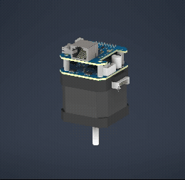

Two Boards on the Back of the Motor
The TMC4361A S-ramp motion controller drives a TMC5160A gate driver with eight external MOSFETs, giving smooth velocity and positioning moves at up to about 3 A per coil from a 12–24 V supply. Both ICs wouldn't fit on one 42 mm board, so the design is a stacked pair joined by a 16-pin header.
- Power board: TMC5160A, a dual H-bridge with AO4882 MOSFETs, Kelvin-connected current sensing, and tiered VM filtering sized for hot-plugging over a cable.
- Logic board: TMC4361A with a 16 MHz oscillator, a 12–24 V to 5 V buck and 3.3 V LDO sequenced through power-good, an ABN encoder input and a level-shifted home-sensor input.
Autodesk Inventor, NEMA 17, TMC4361A, TMC5160A